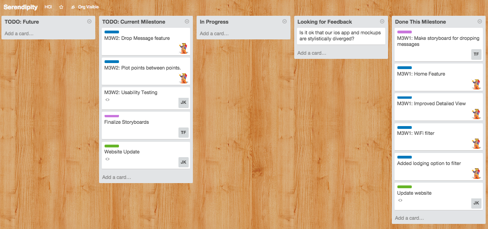
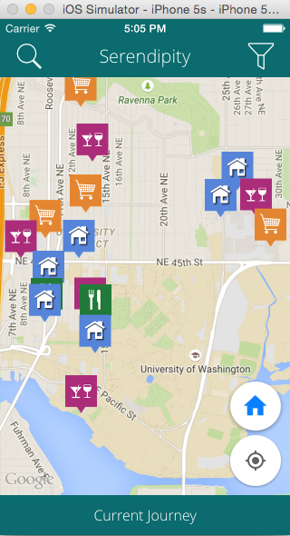
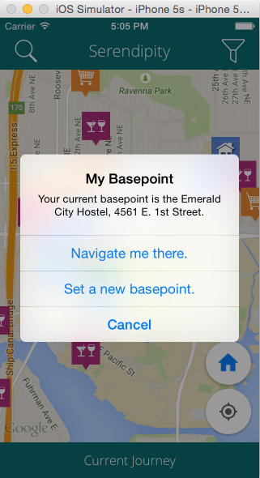
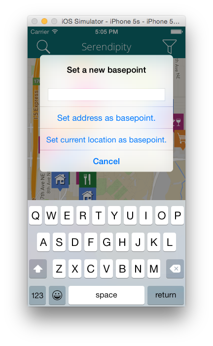
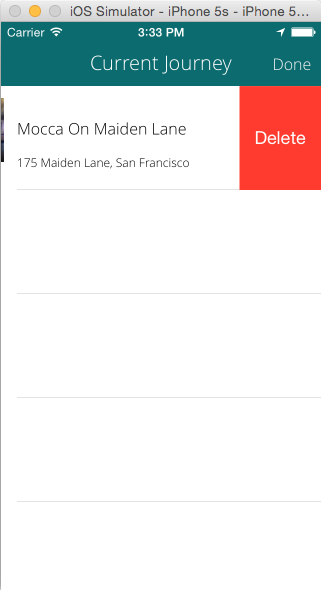
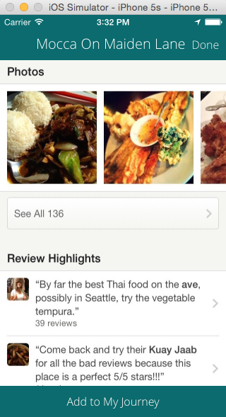
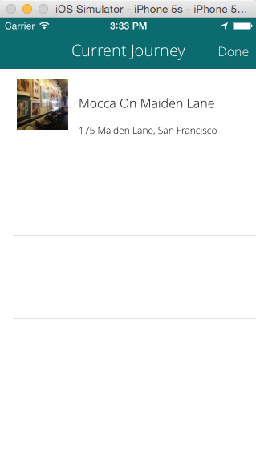

Tuesday - May 19, 2015: 3x3 Update

Three things we have done in the past week:
- - We first began by giving an update to the class on what we'll be doing for the rest of the quarter.(what we discussed in the previous Thursday meeting)
- - App Development
- - Home Feature
- - Improved Detailed View
- - WiFi Filter
- - Storyboards
- - Make storyboard for dropping messages
- - Website update
- - added more meaningful bios to About Us section
- - added the first 3 weeks to the weekly updates section (so we'll have 10 weekly updates by the end of the quarter)
- - moved the Project Proposal page to under the Docs pages
- - updated specific icons
App Screenshots:






Drop Messages Storyboard Presented:
 Three things we will do this week:
Three things we will do this week:
- - App Development
- - Drop Message Feature
- - Plot points between points
- - Finalize Storyboards
- - Update Website with this week's update
Three things where we could advice or are blocked:
- - iOS App feedback
- - Drop Message Storyboard
- - Need Feedback on Website
Feedback from Tuesday's Class:
- - "currenct" misspelling
- - capitalization of Basepoint
- - could put the Drop Messages button down with the buttons on the map, or could put the Search button there too
- - bottom MyJourney button - move the Drop Messages down there (maybe?)
- - change icon for Drop Messages
- - change name for "Drop Messages"
- - think about how travelers could get spammed with all of these drop messages
- - zooming in to control it
- - up/down vote it = where if you get enough downvotes the message gets deleted
- - move MyJourney to the top left and then do a discovery feature where that icon is at
- - login can hold off - that's fine
Thursday - May 21, 2015: Meeting Update
Storyboards Presented:


 Feedback:
Feedback:
Biggest high level reaction → framing the second scenario
Have the app keep track in the background where you are at in the journey
Storyboards
Scenario 2 has a slightly different starting point
Need to fix the numberings on the screens
Online Planning
"plot" is a weird word
range, order, path, route (but maybe too much like go where you're already navigating), MyJourney (and then change MyJourney to be MyBackpack or something along those lines)
last 5 screens need to be reordered
something's missing → missing one screen
tap plot
tap each icon individually to order it
expand this interaction
maybe need to replicate those flags on items that you were interested in but didn't addto your trip
Offline Navigation
misleading thinking that offline you can only do navigation
want to do more of a comparison between online and offline
but are they that different? (can do everything online as you can do offline)
but there's also a difference between planning and doing
surface the WiFi here
Jane knows there's a tour guide but didn't cache it previously → therefore she uses the WiFi filter to download it
scene in middle where they find a museum midway through their journey
Drop Messages
"Senrendipity" typo
need to add the additional icons (restaurant..etc) to the map (to show it's the same map and not a different one
need to add the messages filter
seeing whats there and then leaving your own messages
Size wise for scenarios → keep it to a 2 minute video *would be able to do this with current set of storyboards but would need to keep it crisp
Testing
How many people do we need? → 3-5 smaller number should be alright because we'll reach a saturation point, no more than 5, should have some traveling abroad experience
Do we need a scale with which to grade the usability testing? → mostly qualitative, set up like a paper prototype session, groups of friends or mini focus group (get them thinking about doing a trip)
more of a heuristic evaluation → try to get the whole range of reactions from online-offline, little more of the implications